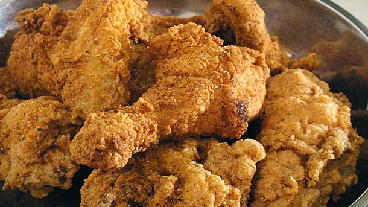

Fried Chicken

Description
Fried chicken, also known as Southern fried chicken is a dish consisting of chicken pieces that have been coated with seasoned flour or batter and pan-fried, deep fried, pressure fried, or air fried. The breading adds a crisp coating or crust to the exterior of the chicken while retaining juices in the meat. Broiler chickens are most commonly used.
Ingredients
- Chicken
- Eggs
- Flour
- Kosher Salt
- Pepper
- Garlic Powder
- Paprika
- Vegetable Oil
Steps
- In a large bowl, beat the eggs. In another bowl, combine the salt, pepper, garlic powder and paprika to make a seasoned salt. Add the flour to a third bowl.
- Prepare the chicken by first seasoning each piece of chicken to your taste with the seasoned salt. Then dip each piece in the egg and drag through flour until coated well.
- Fill a large pot or deep fryer half full with oil and heat to 350°F. Place the chicken parts in and fry until dark and crisp. The thighs and legs will take longer to cook – about 15 minutes – than the breast and wings, which will take about 10 minutes.
- Remove from heat, let sit for 5 minutes to cool and enjoy!